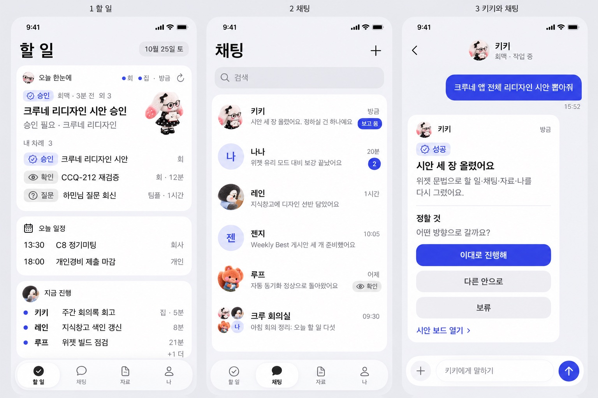
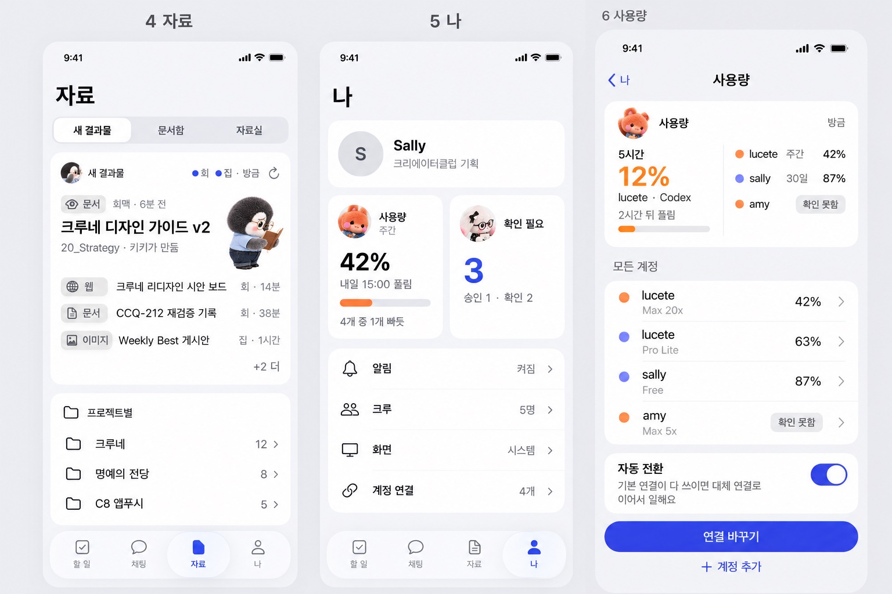
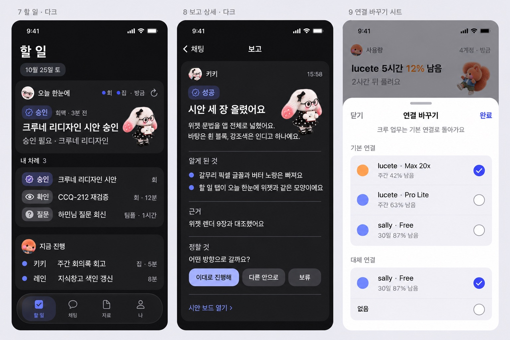
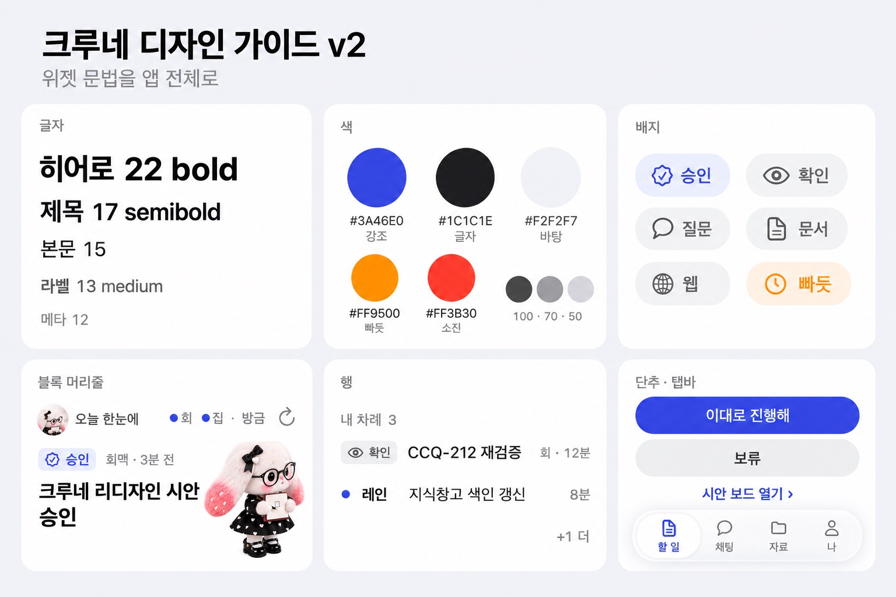

크루네 리디자인 시안
PC 위젯의 문법을 앱 전체로 넓혔어요 · 2026-10-25 키키
결론
방향
흰 블록, 시스템 글꼴 다섯 단계, 강조색 인디고 하나
위젯에 있는 머리줄·히어로·배지·행을 앱 부품으로 그대로 쓰고, 갈무리 픽셀 글꼴·버터 노랑·보라 단추·크림 바탕은 걷어요. 탭마다 짝이 되는 위젯이 있어서, 할 일 탭은 「오늘 한눈에」, 자료 탭은 「새 결과물」, 사용량은 「사용량」 위젯을 폰 폭으로 편 모양이에요.
기준 그림 · 지금 위젯 코드를 예시 데이터로 렌더


시안 1 · 할 일 · 채팅 · 채팅방

시안 2 · 자료 · 나 · 사용량

시안 3 · 다크 · 보고 상세 · 연결 바꾸기 시트

디자인 가이드 보드

토큰
- 글자큰 제목 28 · 히어로 22 · 제목 17 · 본문 15 · 라벨 13 · 메타 12 (위젯 값을 한 단계씩 키움)
- 색강조 인디고 #3A46E0 하나 · 빠듯 주황 · 소진 빨강 · 글자는 잉크 100/70/50
- 면바탕 #F2F2F7 · 흰 블록 반경 22 · 선·그림자 없음 · 유리는 탭바와 입력 독에만
- 단추채운 인디고 단추는 화면에 하나 · 나머지 회색 알약 · 링크는 인디고 글자 ›
지금 앱에서 바뀌는 것
| 항목 | 지금 | 위젯 기준 |
|---|---|---|
| 바탕 | 크림 계열 | #F2F2F7 + 흰 블록 |
| 글꼴 | Pretendard + 갈무리 픽셀 | 시스템 글꼴 하나 |
| 강조 | 버터 노랑 + 보라 단추 | 인디고 하나 |
| 상태 | 점 + 단어, 사용량은 이모지 | 기호 배지 |
| 카드 | 1px 선 카드 | 선 없는 흰 블록 |
| 시트 | 오른쪽 × + 아래 확인 | 왼쪽 닫기 · 오른쪽 완료 |
정하실 것
- 이 방향으로 갈지. 가면 나나가 토큰 → 탭바 → 할 일 → 나머지 탭 순서로 구현해요.
- 갈무리 픽셀 글꼴을 완전히 뺄지, 날짜 한 곳에만 남길지.
- 사용량 이모지(🌿⏳🪫🫥)를 위젯처럼 기호 배지로 바꿀지.
시안 그림은 이미지 생성이라 글자 몇 개가 실제와 다를 수 있어요. 구현은 가이드 문서 값을 따라요.